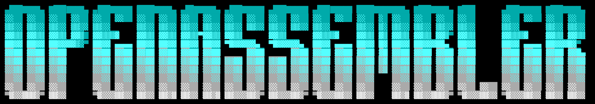

OPENASSEMBLER

SM80 / A100OPENASSEMBLER / PTX → SASS + CUBIN
gemm_fp16.ptx↗
// Full-tile GEMM; FP32 accumulation/output.
.visible .entry gemm_fp16(
.param .u64 A, B, C
) {
mma.sync.aligned.m16n8k16
row.col.f32.f16.f16.f32;
} NATIVE SM80 PATHSASS → CUBIN
→→
ILLUSTRATIVE COMPILATION PATH · SELECT A STAGESOFTWARE THAT SPEAKS HARDWARE.↙ 001
OpenAssembler.
Native code for
measured GPU contracts.
A native NVIDIA SASS/cubin compiler for SM80/A100 with shape-aware GEMM dispatch, cooperative FP32 reductions, and a constrained native Python model route.
42exact GEMM contracts¹
952latest tests passed²
¹ Current dispatch snapshot; ² November 13 repository regression snapshot.